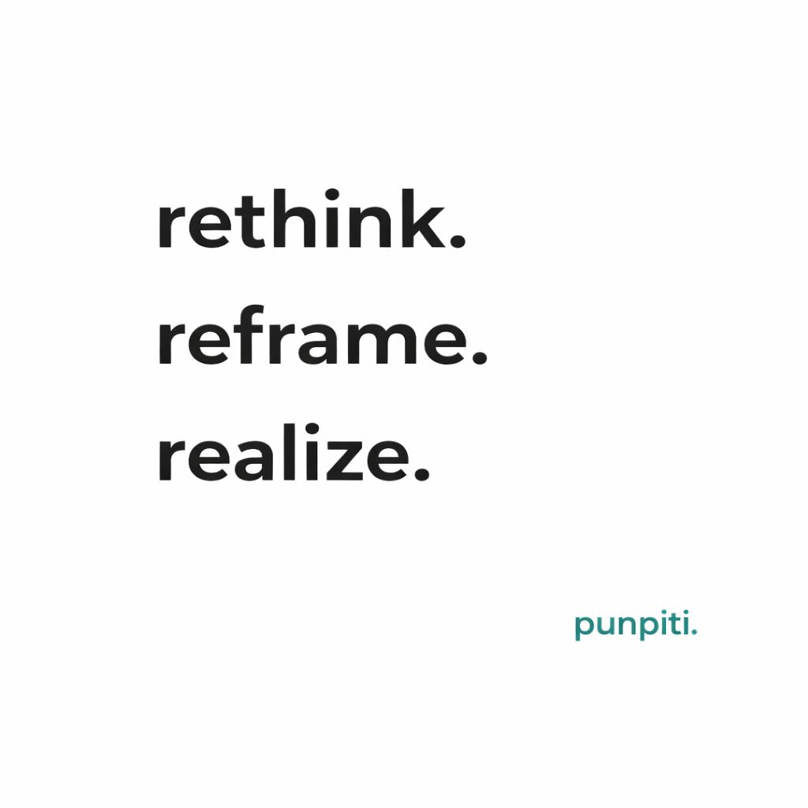

Rethink. Reframe. Realize. คือกรอบคิดเพื่อเปลี่ยนมหาวิทยาลัยจากผลแบบเดิมไปสู่บทบาทใหม่ของระบบ
{kind=link}

เหตุผลที่ต้องพูดคำว่า rethink, reframe, และ realize ซ้ำ ๆ ก็เพราะถ้าเรายังคิดแบบเดิม จัดการแบบเดิม และใช้คนแบบเดิม เราก็จะได้ผลแบบเดิม ต่อให้เพิ่มโครงการหรือเครื่องมืออีกเท่าไร ระบบก็จะวนกลับมาที่จุดเดิมเสมอ
ที่ผ่านมา มหาวิทยาลัยพยายามพัฒนาโดยยึดกรอบเดิม เช่น ผลิตบัณฑิตให้มากขึ้น ทำวิจัยให้มากขึ้น หรือขยับ ranking ให้สูงขึ้น ซึ่งทั้งหมดไม่ผิด แต่คำถามคือมันพอแล้วหรือยัง ในโลกที่ไม่ได้เปลี่ยนแบบค่อยเป็นค่อยไปอีกต่อไป
โลกวันนี้เปลี่ยนในระดับที่ระบบตั้งรับไม่ทัน โควิด ทำให้เห็นว่าการเรียนรู้หยุดไม่ได้แม้ระบบหยุด, AI ทำให้ความรู้ไม่ใช่ข้อได้เปรียบแบบเดิมอีกต่อไป, และความขัดแย้งของโลกทำให้เรื่องอาหาร พลังงาน และสังคมเชื่อมโยงกันในฐานะระบบเดียวกัน
เมื่อโลกเปลี่ยนเร็วกว่าองค์กร มหาวิทยาลัยต้องเลิกนิยามตัวเองแค่ผู้ผลิตบัณฑิต
ในโลกแบบนี้ เศรษฐกิจและสังคมไม่ได้ต้องการแค่คนที่เรียนจบ แต่ต้องการคนที่ทำงานได้จริงในระบบที่ซับซ้อน ขณะเดียวกัน ผู้ใช้จริงก็เริ่มไม่รอมหาวิทยาลัยอีกต่อไป และสร้างกลไกรับรองหรือพัฒนาคนแบบของตัวเองขึ้นมาเอง นั่นแปลว่ามหาวิทยาลัยกำลังเสี่ยงหลุดจากการเป็นผู้ผลิตหลักของสังคม
แต่แทนที่จะพยายามแข่งกับเอกชนหรือทำหน้าที่แทนรัฐ มหาวิทยาลัยควรกลับมาอยู่ในบทบาทที่สำคัญกว่า คือเป็นพันธมิตรของระบบ ที่เติมเต็มในสิ่งที่ระบบอื่นยังทำไม่ได้
ปัญหาไม่ใช่ว่าเรามีหรือไม่มี แต่คือสิ่งที่มีอยู่ยังไม่ได้ทำงานร่วมกันจริง
หลายครั้งเมื่อมีคนบอกว่าสิ่งที่เสนอ มหาวิทยาลัยก็ทำอยู่แล้ว คำตอบอาจเป็นว่าใช่ หลายอย่างเรามีอยู่จริง แต่คำถามที่สำคัญกว่า คือสิ่งที่เราทำอยู่มันเชื่อมกันหรือยัง และสร้างผลลัพธ์ในระดับระบบหรือยัง เพราะปัญหาเชิงสถาบันจำนวนมากไม่ได้เกิดจากการขาดทรัพยากรหรือขาดกิจกรรม แต่เกิดจากการที่สิ่งที่มีอยู่ยังไม่ทำงานร่วมกัน
ถ้ายังคิดแบบเดิม เราก็จะพยายามแก้ด้วยสูตรเดิม คือเพิ่มรายวิชา เพิ่ม KPI เพิ่มโครงการ เพิ่มเครื่องมือ ทั้งที่ปัญหาจริงไม่ใช่ว่าขาดเทคโนโลยี แต่คือยังไม่มีระบบที่ทำให้เทคโนโลยีนั้นสร้างคุณค่าได้จริง
Rethink และ Reframe คือการย้อนถามบทบาทของมหาวิทยาลัยใหม่ทั้งหมด
Rethink คือการกล้าย้อนถามว่าสิ่งที่ทำอยู่ยังใช่หรือไม่ ส่วน Reframe คือการตั้งคำถามใหม่และมองบทบาทของมหาวิทยาลัยใหม่ทั้งหมด ไม่ใช่ทำทุกอย่างให้มี แต่ต้องตอบให้ได้ว่า มีแล้วสร้างคุณค่าอะไร
มหาวิทยาลัยจึงไม่ควรถูกนิยามแค่ในฐานะผู้ผลิตบัณฑิตหรือผู้ทำวิจัย แต่ต้องถูกมองว่าเป็นผู้สร้างขีดความสามารถของประเทศ และช่วยลดความเสี่ยงของระบบในระยะยาว
Realize คือการแปลงความคิดให้เป็นระบบที่ทำให้สิ่งยากเกิดขึ้นได้จริง
Realize คือส่วนที่ยากที่สุด เพราะไม่ได้จบที่แนวคิด แต่ต้องมีระบบ ทรัพยากร และการจัดการที่ทำให้คนสามารถทำงานที่ยากและมีความหมายได้จริง ถ้าไม่มีส่วนนี้ rethink และ reframe ก็จะกลายเป็นเพียงคำสวย ๆ ที่ไม่เปลี่ยนผลลัพธ์
การเปลี่ยนมหาวิทยาลัยจึงไม่ใช่การทำให้ดีขึ้นเล็กน้อย แต่คือการยอมรับว่าโลกเปลี่ยนไปแล้วเร็วกว่าที่คิด และถ้าเราไม่เปลี่ยน โลกก็ไม่ได้รอเรา